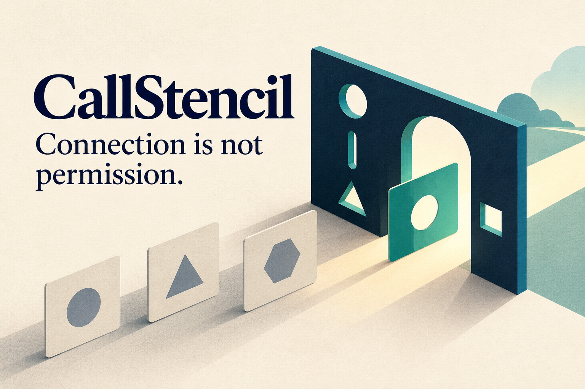
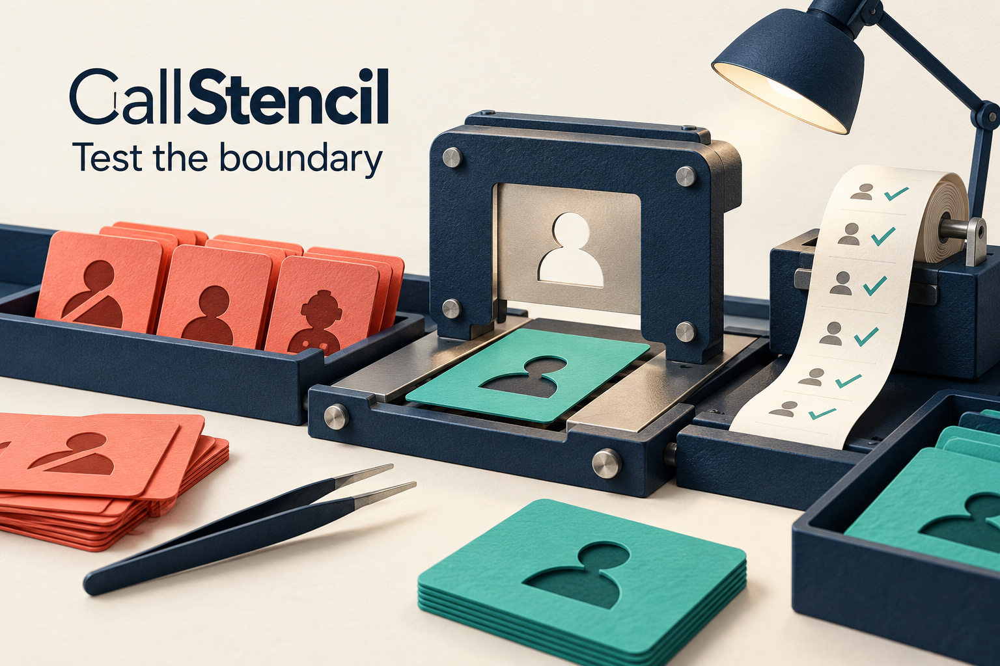
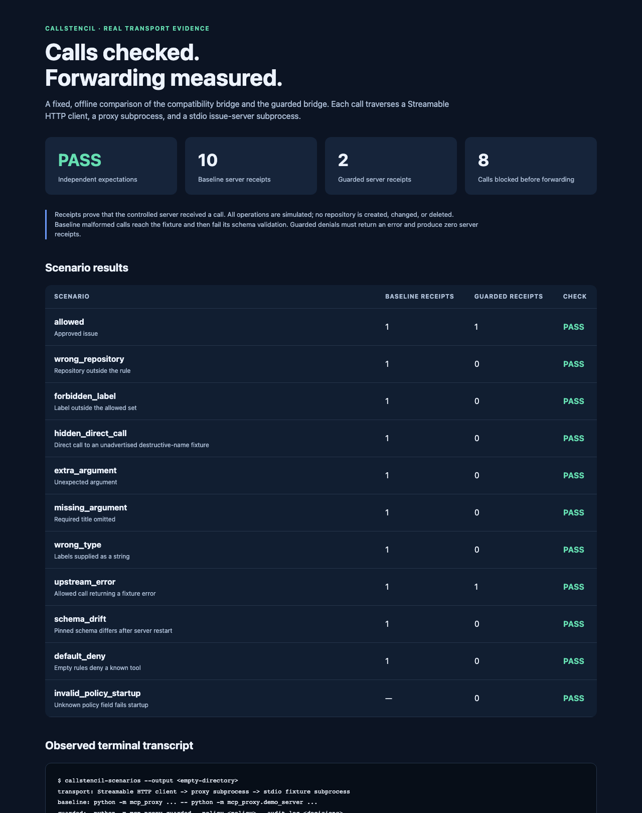
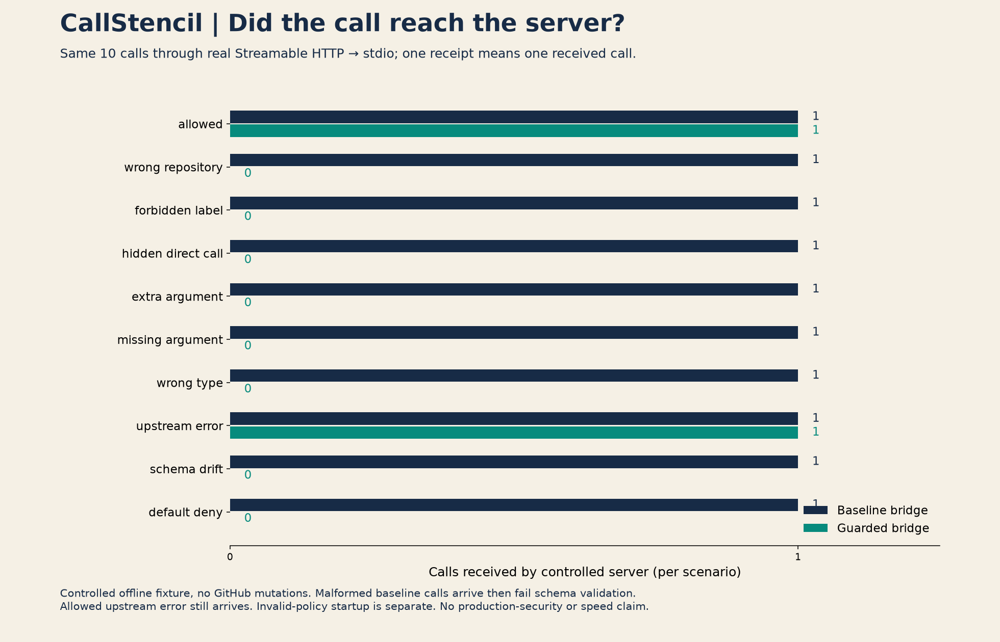
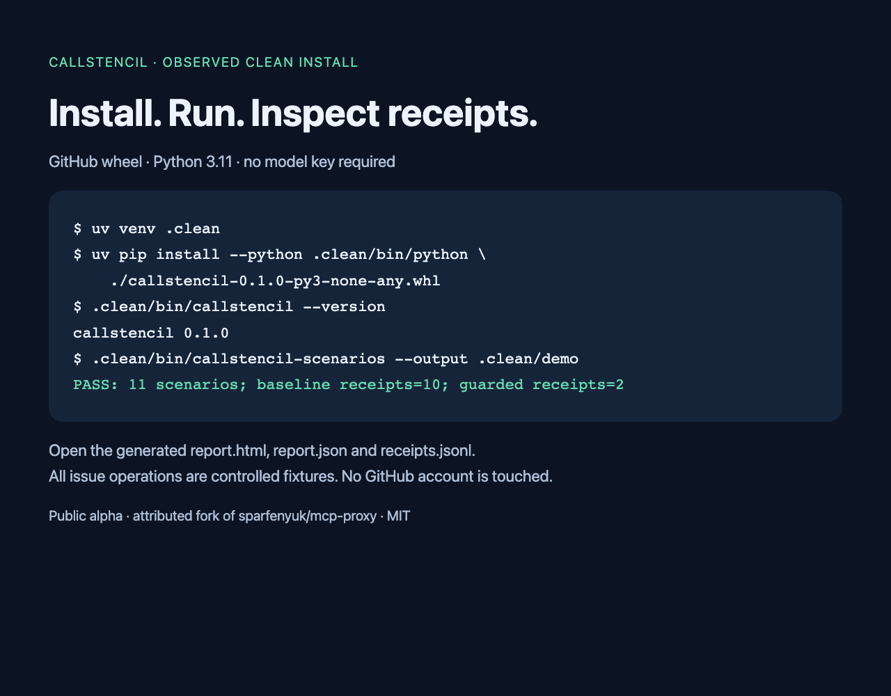

CallStencil launch review
01-problem
Connection is not permission

generated_concept · Conceptual cut-paper illustration: abstract cards approach a navy stencil gate; a matching teal card passes through. Text reads 'CallStencil' and 'Connection is not permission.'
Audience: Engineers connecting agents to MCP tools
Evidence: ../README.md, ../docs/POLICY.md, ../evidence/demo/report.json
State: linkedin: prepared | x: prepared
LinkedIn
A working tool connection answers a transport question. It leaves the permission question open.
Suppose an agent may create an issue in one repository with a small set of labels. Making create_issue discoverable doesn't express that rule. Hiding another tool from discovery doesn't prove a direct call will be refused either.
CallStencil puts an explicit policy check before forwarding tools/call: exact tool name, required arguments, allowed values and a reviewed input-schema fingerprint. Unmatched calls deny. Discovery filtering helps the client, but the call path carries the enforcement.
The offline fixture includes a direct call to an unadvertised tool. The unguarded bridge forwards it; the guarded bridge produces no server receipt. This is a controlled receipt experiment, not a real destructive operation.
CallStencil is an attributed fork of Sergey Parfenyuk and contributors' mcp-proxy. Its useful transport bridge comes from upstream.
Inspect the hidden_direct_call scenario and ask where your own call boundary lives:
https://github.com/grishahq/callstencil
X thread
1/4 A working MCP connection answers "can I reach this tool?" A useful next question is "may this exact call pass?" Repository and label restrictions belong at the call boundary.
2/4 Discovery is useful UX, but hiding a tool doesn't prove direct calls are refused. CallStencil's offline fixture includes a direct call to an unadvertised tool: the guarded path records no server receipt.
3/4 CallStencil checks exact tool names, arguments and pinned input schemas before forwarding tools/call. It is an attributed fork of mcp-proxy by Sergey Parfenyuk and contributors; bridging is upstream work.
4/4 Inspect hidden_direct_call in the recorded demo. The fixture records receipt, never a real repository deletion. Where is the equivalent boundary in your tool setup?
https://github.com/grishahq/callstencil
02-design
Small rules, explicit tradeoffs

generated_concept · Conceptual engineering workbench in ivory, navy, teal and coral: a stencil checks cards beside a receipt roll. Text reads 'CallStencil' and 'Test the boundary'.
Audience: Platform engineers reviewing MCP policy design
Evidence: ../docs/POLICY.md, ../README.md, ../ATTRIBUTION.md
State: linkedin: prepared | x: prepared
LinkedIn
A permission rule should be small enough to review and strict enough to fail closed.
CallStencil v1 uses exact tool names, required argument keys and explicit constraints. For the issue fixture, a rule can require one repository and limit every label to an approved set. Unknown argument keys deny. An empty rules array is a valid deny-all policy.
There is another piece to review: the server's input schema. Each rule pins its SHA-256 fingerprint. A fresh schema lookup on every call lets the bridge reject a changed or unavailable schema before forwarding.
That choice costs a round trip and may expose compatibility problems. It also has a clear limit: a schema fingerprint cannot establish that a server's implementation behaves as advertised. Pin and review the server build too; lookup and forwarding are separate operations.
This stays deliberately narrow: one stdio server exposed over HTTP or SSE, with policy enforcement on tools/call. It provides no OS sandbox or caller-identity binding.
The transport foundation is mcp-proxy, credited in the repository. Per-call policy has existing prior art.
Read the policy reference and try deny-all before adding one narrow rule:
https://github.com/grishahq/callstencil/blob/main/docs/POLICY.md
X thread
1/4 A small policy is easier to review. CallStencil v1 uses exact tool names, required argument keys and explicit value constraints. Unknown argument keys deny. An empty rules array denies every tool call.
2/4 Each rule pins the reviewed input schema's SHA-256 fingerprint. A fresh lookup on every call rejects changed or unavailable schemas before forwarding. The cost is another round trip and a compatibility tradeoff.
3/4 A schema digest can't prove server behavior. Review and pin the server build too. Scope is narrow: tools/call for one stdio server exposed over HTTP/SSE. No OS sandbox or caller-identity binding.
4/4 Start with deny-all, then add one narrow rule. Review the policy language and its limits. CallStencil builds on the credited mcp-proxy transport bridge.
https://github.com/grishahq/callstencil/blob/main/docs/POLICY.md
03-demo
Follow the call to a receipt

software_capture · Browser capture of the actual CallStencil offline demo report, showing passing scenario checks and baseline versus guarded server receipts.
Audience: Developers who want a reproducible tool-permission demo
Evidence: ../evidence/demo/report.json, ../evidence/demo/report.html, ../README.md
State: linkedin: prepared | x: prepared
LinkedIn
A denial message is useful. An independent server receipt answers a different question: did the call arrive?
CallStencil's demo runs a real subprocess stdio server behind a Streamable HTTP bridge on loopback. The server is a controlled issue fixture. No model key, external account or GitHub mutation is involved.
The runner exercises 11 scenarios: an approved issue, wrong repository, forbidden label, a hidden direct call, malformed arguments, schema drift, deny-all, a server error and invalid policy startup. The recorded run passes its receipt and error assertions.
Follow one case through the files: the wrong-repository call gets a receipt through the unguarded bridge, and zero receipts through the guarded bridge. Then inspect upstream_error: it passes policy and reaches the fixture, which returns an error. Authorization passed; execution did not succeed.
That distinction is why the report includes both decision records and server receipts. A green authorization record is not an application success claim.
The bridge is an attributed mcp-proxy fork. The added fixture and runner make this particular boundary inspectable.
Run the local fixture, then compare decisions.jsonl with receipts.jsonl:
https://github.com/grishahq/callstencil
X thread
1/4 A denial message and a server receipt answer different questions. CallStencil's offline demo compares both across a real Streamable HTTP bridge and a subprocess stdio fixture. No model key or external account needed.
2/4 The recorded run passes 11 scenarios. Wrong repository: baseline receipt 1, guarded receipt 0. The fixture never creates GitHub issues; a receipt means the forwarded call arrived.
3/4 The upstream_error case matters: policy allows the call, the fixture receives it, then returns an error. Authorization success and application success are separate facts. Inspect decisions and receipts together.
4/4 Reproduce the fixture locally and inspect report.json, decisions.jsonl and receipts.jsonl. CallStencil is an attributed mcp-proxy fork; the report is a bounded experiment.
https://github.com/grishahq/callstencil
04-experiment
Read the receipt comparison fairly

data_visualization · Chart derived from the recorded offline demo: 10 baseline receipts, 2 guarded receipts and 8 blocked call attempts. Receipt totals describe fixture arrival, not real repository mutations.
Audience: Engineers assessing evidence and experiment limits
Evidence: ../evidence/demo/report.json, ../README.md, ../docs/POLICY.md
State: linkedin: prepared | x: prepared
LinkedIn
10 baseline receipts. 2 guarded receipts. The useful part is what those numbers mean.
The CallStencil demo compares the unguarded bridge with the guarded bridge using controlled scenarios and an independent fixture receipt log. Eight call attempts that reach the baseline fixture produce zero guarded receipts. The approved call and an allowed call that returns a fixture error account for the two guarded receipts.
An important detail: the fixture writes its receipt before validating arguments. Some baseline calls therefore have a receipt AND an error. Ten receipts do not mean ten successful operations, and no real repository is modified.
The 11th scenario tests malformed policy startup. It has no baseline call; the guarded process fails before a server call occurs. Read its startup assertion separately from the ten paired call cases.
These are deterministic local checks of selected policy paths. They are not production coverage, a latency benchmark, or proof about every server. A pinned schema detects declared changes; it cannot attest to implementation semantics.
CallStencil retains mcp-proxy's transport work with explicit attribution. The contribution here is a narrow, reproducible policy experiment.
Inspect the per-scenario observations before interpreting the totals:
https://github.com/grishahq/callstencil/blob/main/evidence/demo/report.json
X thread
1/5 The CallStencil fixture recorded 10 baseline receipts and 2 guarded receipts. Eight call attempts reached the unguarded fixture and produced zero guarded receipts. These are receipt counts, not a security score.
2/5 The fixture writes a receipt BEFORE argument validation. A baseline call can have both a receipt and an error. No real repository is modified. Arrival is the measured event.
3/5 The two guarded receipts are an approved call and an allowed call returning a fixture error. The 11th scenario checks invalid-policy startup; it has no paired baseline call.
4/5 Limits: selected deterministic local scenarios, no production coverage or latency claim. Schema pinning detects declared schema changes, not silently changed server behavior. Inspect individual observations.
5/5 The full report is checked in. Reproduce it and challenge the assumptions. CallStencil builds on mcp-proxy with explicit attribution.
https://github.com/grishahq/callstencil/blob/main/evidence/demo/report.json
05-release
A quickstart that leaves evidence

software_capture · Rendered observed clean-install output for CallStencil v0.1.0: wheel installation, version command and scenario runner, with 11 passing scenarios, 10 baseline receipts and 2 guarded receipts. This is an HTML rendering of observed output, not an operating-system terminal screenshot.
Audience: Python and MCP developers evaluating the alpha
Evidence: ../README.md, ../ATTRIBUTION.md, ../evidence/demo/report.json, ../evidence/release.json, ../evidence/release-verification.json, ../evidence/clean-install.txt
State: linkedin: prepared | x: prepared
LinkedIn
CallStencil v0.1.0 is available as a public alpha. The quickstart leaves evidence you can inspect.
Download callstencil-0.1.0-py3-none-any.whl and SHA256SUMS from the release below. Verify the wheel checksum, then use Python 3.10+ and uv in a fresh environment:
uv venv .venv
uv pip install --python .venv/bin/python ./callstencil-0.1.0-py3-none-any.whl
.venv/bin/callstencil-scenarios --output demo-evidence
The observed clean-install run reports: PASS: 11 scenarios; baseline receipts=10; guarded receipts=2. Open demo-evidence/report.html and compare decisions.jsonl with receipts.jsonl. Receipt means fixture arrival, not a real repository mutation.
CallStencil is an attributed fork of mcp-proxy by Sergey Parfenyuk and contributors. It retains the mcp_proxy module; don't co-install both distributions. The callstencil command requires a valid policy. The compatibility mcp-proxy command without --policy has no CallStencil enforcement.
Scope: tools/call policy for a stdio server exposed over HTTP or SSE. Direct server access remains outside the boundary; this provides no OS sandbox.
Download, verify and reproduce. Report a minimal policy/server/schema example if observed behavior differs from the docs:
https://github.com/grishahq/callstencil/releases/tag/v0.1.0
X thread
1/5 CallStencil v0.1.0 is a public alpha. Download callstencil-0.1.0-py3-none-any.whl and SHA256SUMS, then verify the wheel checksum. Start in a fresh Python 3.10+ environment.
https://github.com/grishahq/callstencil/releases/tag/v0.1.0
2/5 With uv installed, run:
uv venv .venv
uv pip install --python .venv/bin/python ./callstencil-0.1.0-py3-none-any.whl
.venv/bin/callstencil-scenarios --output demo-evidence
3/5 The observed clean-install run reports: PASS: 11 scenarios; baseline receipts=10; guarded receipts=2. Open demo-evidence/report.html. Compare decisions.jsonl with receipts.jsonl. Receipt means fixture arrival, not real repository mutation.
4/5 CallStencil is an attributed mcp-proxy fork by Sergey Parfenyuk and contributors. Both use mcp_proxy; avoid co-installing them. callstencil requires a policy; compatibility mcp-proxy without --policy has no CallStencil enforcement.
5/5 Alpha scope: tools/call policy for a stdio server exposed over HTTP/SSE. No OS sandbox or protection against direct server access. Reproduce the fixture and report minimal policy/server/schema examples.
https://github.com/grishahq/callstencil/releases/tag/v0.1.0